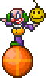

Clown
| Drops | |
|---|---|
| Coins: | 80 |
| Clown | |
|---|---|
|  | |
| Statistics | |
| Type | Enemy |
| AI Type | Fighter |
| Damage | 100 (bombs) 50 (melee) |
| Max Life | 400 |
| Defense | 20 |
The Clown is a rare enemy that sometimes appears during Blood Moons on Hardmode. The smiley bomb it throws will destroy nearby blocks when it goes off, like a normal Bomb; this makes the Clowns a serious hazard to any structures. Ranged weapons are the most useful form of attack against clowns as they will explode when killed. You can use them to shoot the clown's bombs out of the air as well. Once you have defeated at least one Clown the Clothier will start selling the clown costume. The most common ways to defend against these enemies is to either:
- Barricade your house with Dungeon Bricks, which are impervious to bombs.
- Hide underground until the night is over, (that way Clowns cannot spawn.)
- Build your house above the ground so the Clown and his Bombs cannot reach it.
- Put moats with Lava on either side of your base. Optionally you can install active/inactive stone switchable block bridges to make it easier for you to access your house.
History
- 1.1: Introduced.